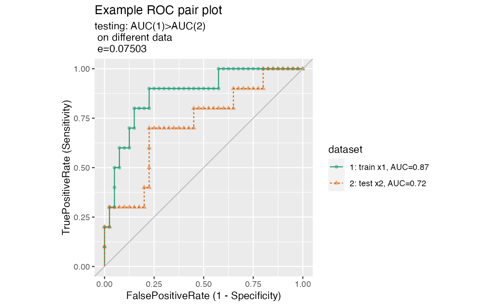

Plot two receiver operating characteristic plots from unrelated frames.
ROCPlotPair2(nm1, frame1, xvar1, truthVar1, truthTarget1, nm2, frame2, xvar2, truthVar2, truthTarget2, title, ..., returnScores = FALSE, nrep = 100, parallelCluster = NULL)
| nm1 | name of first model |
|---|---|
| frame1 | data frame to get values from |
| xvar1 | name of the first independent (input or model) column in frame |
| truthVar1 | name of the dependent (output or result to be modeled) column in frame |
| truthTarget1 | value we consider to be positive |
| nm2 | name of second model |
| frame2 | data frame to get values from |
| xvar2 | name of the first independent (input or model) column in frame |
| truthVar2 | name of the dependent (output or result to be modeled) column in frame |
| truthTarget2 | value we consider to be positive |
| title | title to place on plot |
| ... | no unnamed argument, added to force named binding of later arguments. |
| returnScores | logical if TRUE return detailed permutedScores |
| nrep | number of permutation repititions to estimate p values. |
| parallelCluster | (optional) a cluster object created by package parallel or package snow. |
set.seed(34903490) x1 = rnorm(50) x2 = rnorm(length(x1)) y = 0.2*x2^2 + 0.5*x2 + x1 + rnorm(length(x1)) frm = data.frame(x1=x1,x2=x2,yC=y>=as.numeric(quantile(y,probs=0.8))) # WVPlots::ROCPlot(frm, "x1", "yC", TRUE, title="Example ROC plot") # WVPlots::ROCPlot(frm, "x2", "yC", TRUE, title="Example ROC plot") WVPlots::ROCPlotPair2('train',frm, "x1", "yC", TRUE, 'test', frm, "x2", "yC", TRUE, title="Example ROC pair plot")